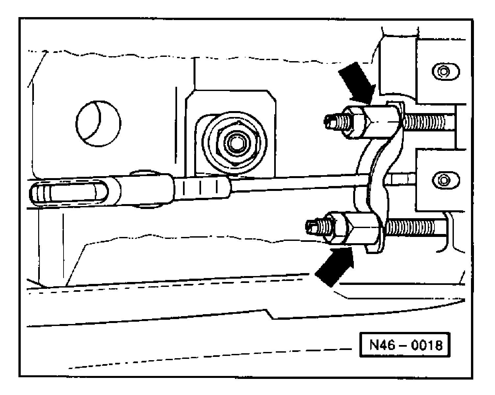

With Rear Disc Brakes
Parking Brake Adjustment, Rear disc BrakesBecause of the automatic adjustment function of the rear brakes, readjusting the parking brake is usually not necessary. Readjust only if the parking brake cables, brake calipers, or brake pads and discs have been replaced.

Remove hand grip and center console to allow access to adjusting nuts (arrows).
Release parking brake.

Tighten adjusting nut until lever (arrow) lift off of stop on caliper.
Gap (arrow) between lever and stop should be 1.0 - 3.0 mm (0.04 - 0.12 in) and the same on both sides.
A = Up to m.y. 1995 (S)
B = From m.y. 1996 (T)
1 = Feeler gauge
Pull up and then release parking brake three times.
Check that both wheels turn freely.